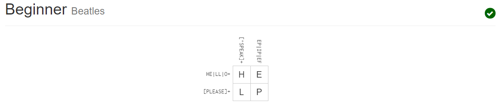
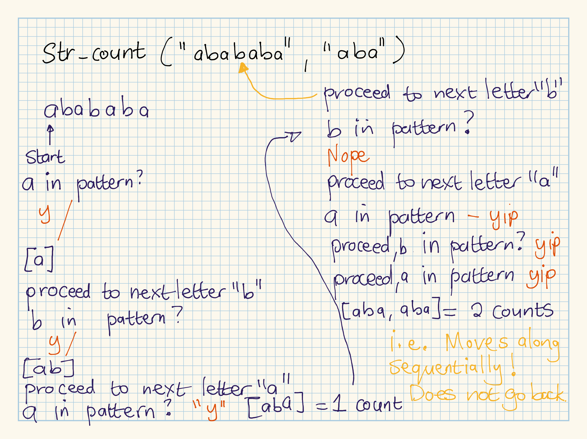

Last updated: 2020-11-01
Checks: 7 0
Knit directory: r4ds_book/
This reproducible R Markdown analysis was created with workflowr (version 1.6.2). The Checks tab describes the reproducibility checks that were applied when the results were created. The Past versions tab lists the development history.
Great! Since the R Markdown file has been committed to the Git repository, you know the exact version of the code that produced these results.
Great job! The global environment was empty. Objects defined in the global environment can affect the analysis in your R Markdown file in unknown ways. For reproduciblity it’s best to always run the code in an empty environment.
The command set.seed(20200814) was run prior to running the code in the R Markdown file. Setting a seed ensures that any results that rely on randomness, e.g. subsampling or permutations, are reproducible.
Great job! Recording the operating system, R version, and package versions is critical for reproducibility.
Nice! There were no cached chunks for this analysis, so you can be confident that you successfully produced the results during this run.
Great job! Using relative paths to the files within your workflowr project makes it easier to run your code on other machines.
Great! You are using Git for version control. Tracking code development and connecting the code version to the results is critical for reproducibility.
The results in this page were generated with repository version 2cd3513. See the Past versions tab to see a history of the changes made to the R Markdown and HTML files.
Note that you need to be careful to ensure that all relevant files for the analysis have been committed to Git prior to generating the results (you can use wflow_publish or wflow_git_commit). workflowr only checks the R Markdown file, but you know if there are other scripts or data files that it depends on. Below is the status of the Git repository when the results were generated:
Ignored files:
Ignored: .Rproj.user/
Untracked files:
Untracked: analysis/images/
Untracked: code_snipp.txt
Note that any generated files, e.g. HTML, png, CSS, etc., are not included in this status report because it is ok for generated content to have uncommitted changes.
These are the previous versions of the repository in which changes were made to the R Markdown (analysis/ch11_strings.Rmd) and HTML (docs/ch11_strings.html) files. If you’ve configured a remote Git repository (see ?wflow_git_remote), click on the hyperlinks in the table below to view the files as they were in that past version.
| File | Version | Author | Date | Message |
|---|---|---|---|---|
| Rmd | 2cd3513 | sciencificity | 2020-11-01 | more of ch11 |
| html | d8813e9 | sciencificity | 2020-11-01 | Build site. |
| Rmd | 3ec3460 | sciencificity | 2020-11-01 | more of ch11 |
| html | bf15f3b | sciencificity | 2020-11-01 | Build site. |
| Rmd | a8057e7 | sciencificity | 2020-11-01 | added ch11 |
| html | 0aef1b0 | sciencificity | 2020-10-31 | Build site. |
| Rmd | 72ad7d9 | sciencificity | 2020-10-31 | added ch10 |
Click on the tab buttons below for each section
(string1 <- "This is a string")
#> [1] "This is a string"
(string2 <- 'To put a "quote" inside a string, use single quotes')
#> [1] "To put a \"quote\" inside a string, use single quotes"
writeLines(string1)
#> This is a string
writeLines(string2)
#> To put a "quote" inside a string, use single quotesdouble_quote <- "\"" # or '"'
single_quote <- '\'' # or "'"If you want to include a literal backslash, you’ll need to double it up: "\\".
The printed representation of a string is not the same as string itself, because the printed representation shows the escapes. To see the raw contents of the string, use writeLines():
x <- c("\"", "\\")
x
#> [1] "\"" "\\"
writeLines(x)
#> "
#> \Other useful ones:
"\n": newline"\t": tab": ?'"', or ?"'"."\u00b5", this is a way of writing non-English characters.(string3 <- "This\tis\ta\tstring\twith\t\ttabs\tin\tit.\nHow about that?")
#> [1] "This\tis\ta\tstring\twith\t\ttabs\tin\tit.\nHow about that?"
writeLines(string3)
#> This is a string with tabs in it.
#> How about that?
## From `?'"'` help page
## Backslashes need doubling, or they have a special meaning.
x <- "In ALGOL, you could do logical AND with /\\."
print(x) # shows it as above ("input-like")
#> [1] "In ALGOL, you could do logical AND with /\\."
writeLines(x) # shows it as you like it ;-)
#> In ALGOL, you could do logical AND with /\.Use str_length().
str_length(c("a", "R for Data Science", NA))
#> [1] 1 18 NAUse str_c().
sep = some_char to separate values with a character, the default separator is the empty string.str_replace_na(list) to replace NAs with literal NA.str_c("a", "R for Data Science")
#> [1] "aR for Data Science"
str_c("x", "y", "z")
#> [1] "xyz"
str_c("x", "y", "z", sep = ", ") # separate using character
#> [1] "x, y, z"
str_c("prefix-", c("a","b", "c"), "-suffix")
#> [1] "prefix-a-suffix" "prefix-b-suffix" "prefix-c-suffix"x <- c("abc", NA)
str_c("|=", x, "=|") # concatenating a 1 long, with 2 long, with 1 long
#> [1] "|=abc=|" NA
str_c("|=", str_replace_na(x), "=|") # to actually show the NA
#> [1] "|=abc=|" "|=NA=|"Notice that the shorter vector is recycled.
Objects of 0 length are dropped.
name <- "Vebash"
time_of_day <- "evening"
birthday <- FALSE
str_c("Good ", time_of_day, " ",
name, if(birthday) ' and Happy Birthday!')
#> [1] "Good evening Vebash"
str_c("prefix-", c("a","b", "c"), "-suffix", collapse = ', ')
#> [1] "prefix-a-suffix, prefix-b-suffix, prefix-c-suffix"
str_c("prefix-", c("a","b", "c"), "-suffix") # note the diff without
#> [1] "prefix-a-suffix" "prefix-b-suffix" "prefix-c-suffix"Use str_sub().
start and end args give the (inclusive) position of the substring you’re looking for.str_sub() to modify strings.x <- c("Apple", "Banana", "Pear")
str_sub(x, 1, 3) # get 1st three chars of each
#> [1] "App" "Ban" "Pea"
str_sub(x, -3, -1) # get last three chars of each
#> [1] "ple" "ana" "ear"
str_sub("a", 1, 5) # too short but no failure
#> [1] "a"
x # before change
#> [1] "Apple" "Banana" "Pear"
# Go get from x the 1st char, and assign to it
# the lower version of its character
str_sub(x, 1, 1) <- str_to_lower(str_sub(x, 1, 1))
x # after the str_sub assign above
#> [1] "apple" "banana" "pear"str_to_lower(), str_to_upper() and str_to_title() are all functions that amend case. Amending case may be dependant on your locale though.
# Turkish has two i's: with and without a dot, and it
# has a different rule for capitalising them:
str_to_upper(c("i", "ı"))
#> [1] "I" "I"
str_to_upper(c("i", "ı"), locale = "tr")
#> [1] "I" "I"Sorting is also affected by locales. In Base R we use sort or order, in {stringr} we use str_sort() and str_order() with the additional argument locale.
x <- c("apple", "banana", "eggplant")
str_sort(x, locale = "en")
#> [1] "apple" "banana" "eggplant"
str_sort(x, locale = "haw")
#> [1] "apple" "eggplant" "banana"
str_order(x, locale = "en")
#> [1] 1 2 3
str_order(x, locale = "haw")
#> [1] 1 3 2In code that doesn’t use stringr, you’ll often see paste() and paste0(). What’s the difference between the two functions? What stringr function are they equivalent to? How do the functions differ in their handling of NA?
# from the help page
## When passing a single vector, paste0 and paste work like as.character.
paste0(1:12)
#> [1] "1" "2" "3" "4" "5" "6" "7" "8" "9" "10" "11" "12"
paste(1:12) # same
#> [1] "1" "2" "3" "4" "5" "6" "7" "8" "9" "10" "11" "12"
as.character(1:12) # same
#> [1] "1" "2" "3" "4" "5" "6" "7" "8" "9" "10" "11" "12"
## If you pass several vectors to paste0, they are concatenated in a
## vectorized way.
(nth <- paste0(1:12, c("st", "nd", "rd", rep("th", 9))))
#> [1] "1st" "2nd" "3rd" "4th" "5th" "6th" "7th" "8th" "9th" "10th"
#> [11] "11th" "12th"
(nth <- paste(1:12, c("st", "nd", "rd", rep("th", 9))))
#> [1] "1 st" "2 nd" "3 rd" "4 th" "5 th" "6 th" "7 th" "8 th" "9 th"
#> [10] "10 th" "11 th" "12 th"
(nth <- str_c(1:12, c("st", "nd", "rd", rep("th", 9))))
#> [1] "1st" "2nd" "3rd" "4th" "5th" "6th" "7th" "8th" "9th" "10th"
#> [11] "11th" "12th"
(na_th <- paste0(1:13, c("st", "nd", "rd", rep("th", 9), NA)))
#> [1] "1st" "2nd" "3rd" "4th" "5th" "6th" "7th" "8th" "9th" "10th"
#> [11] "11th" "12th" "13NA"
(na_th <- paste(1:13, c("st", "nd", "rd", rep("th", 9), NA)))
#> [1] "1 st" "2 nd" "3 rd" "4 th" "5 th" "6 th" "7 th" "8 th" "9 th"
#> [10] "10 th" "11 th" "12 th" "13 NA"
(na_th <- str_c(1:13, c("st", "nd", "rd", rep("th", 9), NA)))
#> [1] "1st" "2nd" "3rd" "4th" "5th" "6th" "7th" "8th" "9th" "10th"
#> [11] "11th" "12th" NApaste() inserts a space between values, and may be overridden with sep = "". In other words the default separator is a space.
paste0() has a separator that is by default the empty string so resulting vector values have no spaces in between.
str_c() is the stringr equivalent.
paste() and paste0() treat NA values as literal string NA, whereas str_c treats NA as missing and that vectorised operation results in an NA.
In your own words, describe the difference between the sep and collapse arguments to str_c().
sep is the separator that appears between vector values when these are concatenated in a vectorised fashion.collapse is the separator between values when all vectors are collapsed into a single contiguous string value.(na_th_sep <- str_c(1:12, c("st", "nd", "rd", rep("th", 9)),
# sep only
sep = "'"))
#> [1] "1'st" "2'nd" "3'rd" "4'th" "5'th" "6'th" "7'th" "8'th" "9'th"
#> [10] "10'th" "11'th" "12'th"
(na_th_col <- str_c(1:12, c("st", "nd", "rd", rep("th", 9)),
# collapse only
collapse = "; "))
#> [1] "1st; 2nd; 3rd; 4th; 5th; 6th; 7th; 8th; 9th; 10th; 11th; 12th"
(na_th <- str_c(1:12, c("st", "nd", "rd", rep("th", 9)),
# both
sep = " ", collapse = ", "))
#> [1] "1 st, 2 nd, 3 rd, 4 th, 5 th, 6 th, 7 th, 8 th, 9 th, 10 th, 11 th, 12 th"Use str_length() and str_sub() to extract the middle character from a string. What will you do if the string has an even number of characters?
x <- "This is a string."
y <- "This is a string, no full stop"
z <- "I"
str_length(x)/2
#> [1] 8.5
str_length(y)/2
#> [1] 15
str_sub(x, ceiling(str_length(x)/2),
ceiling(str_length(x)/2))
#> [1] "a"
str_sub(y, str_length(y)/2,
str_length(y)/2 + 1)
#> [1] "ng"
str_sub(z, ceiling(str_length(z)/2),
ceiling(str_length(z)/2))
#> [1] "I"What does str_wrap() do? When might you want to use it?
It is a wrapper around stringi::stri_wrap() which implements the Knuth-Plass paragraph wrapping algorithm.
The text is wrapped based on a given width. The default is 80, overridding this to 40 will mean 40 characters on a line. Further arguments such as indent (the indentation of start of each paragraph) may be specified.
What does str_trim() do? What’s the opposite of str_trim()?
It removes whitespace from the left and right of a string. str_pad() is the opposite functionality.
str_squish() removes extra whitepace, in beginning of string, end of string and the middle. 🥂
(x <- str_trim(" This has \n some spaces in the middle and end "))
#> [1] "This has \n some spaces in the middle and end"
# whitespace removed from begin and end of string
writeLines(x)
#> This has
#> some spaces in the middle and end
(y <- str_squish(" This has \n some spaces in the middle and end ... oh, not any more ;)"))
#> [1] "This has some spaces in the middle and end ... oh, not any more ;)"
# whitespace removed from begin, middle and end of string
writeLines(y)
#> This has some spaces in the middle and end ... oh, not any more ;)Write a function that turns (e.g.) a vector c("a", "b", "c") into the string a, b, and c. Think carefully about what it should do if given a vector of length 0, 1, or 2.
stringify <- function(v){
if (length(v) == 0 | length(v) == 1){
v
}
else if (length(v) == 2){
str_c(v, collapse = " and ")
}
else if (length(v) > 2){
str_c(c(rep("", (length(v) - 1)), " and "),
v, c(rep(", ", (length(v) - 2)), rep("", 2)),
collapse = "")
}
}
emp <- ""
stringify(emp)
#> [1] ""
x <- "a"
stringify(x)
#> [1] "a"
y <- c("a", "b")
stringify(y)
#> [1] "a and b"
z <- c("a", "b", "c")
stringify(z)
#> [1] "a, b and c"
l <- letters
stringify(letters)
#> [1] "a, b, c, d, e, f, g, h, i, j, k, l, m, n, o, p, q, r, s, t, u, v, w, x, y and z"Find a specific pattern
x <- c("apple", "banana", "pear")
# find any "an" char seq in vector x
str_view(x, "an")Find any character besides the newline char.
# find any char followed by an "a" followed by any char
str_view(x, ".a.") What if we want to literally match .?
We need to escape the . to say “hey, literally find me a . char in the string, I don’t want to use it’s special behaviour this time”.
\\.
(dot <- "\\.")
#> [1] "\\."
writeLines(dot)
#> \.
str_view(c("abc", "a$c", "a.c", "b.e"),
# find a char
# followed by a literal .
# followed by another char
".\\..")What if we want the literal \?
Recall that to add a literal backslash in a string we have to escape it using \\.
(backslash <- "This string contains the \\ char and we
want to find it.")
#> [1] "This string contains the \\ char and we\nwant to find it."
writeLines(backslash)
#> This string contains the \ char and we
#> want to find it.So to find it using regex we need to escape each backslash in our regex i.e. \\\\. 👿
writeLines(backslash)
#> This string contains the \ char and we
#> want to find it.
str_view(backslash, "\\\\")Explain why each of these strings don’t match a \: "\", "\\", "\\\".
As we saw above in a string to literally print a \ we use "\\". If we need to match it we need to escape each \, with a \. Since we have two \’s in a string, matching requires 2 * 2 i.e. 4 \
How would you match the sequence "'\?
(string4 <- "This is the funky string: \"\'\\")
#> [1] "This is the funky string: \"'\\"
writeLines(string4)
#> This is the funky string: "'\
str_view(string4, "\\\"\\\'\\\\")What patterns will the regular expression \..\..\.. match? How would you represent it as a string?
It matches the pattern literal . followed by any character x 3.
(string5 <- ".x.y.z something else .z.a.r")
#> [1] ".x.y.z something else .z.a.r"
writeLines(string5)
#> .x.y.z something else .z.a.r
str_view_all(string5, "\\..\\..\\..")Use:
^ to match the start of the string.
$ to match the end of the string.
x
#> [1] "apple" "banana" "pear"
str_view(x, "^a") # any starting with a?str_view(x, "a$") # any ending with a?To match a full string (not just the string being a part of a bigger string).
(x <- c("apple pie", "apple", "apple cake"))
#> [1] "apple pie" "apple" "apple cake"
str_view(x, "apple") # match any "apple"str_view(x, "^apple$") # match the word "apple"Match boundary between words with \b.
How would you match the literal string "$^$"?
(x <- "How would you match the literal string $^$?")
#> [1] "How would you match the literal string $^$?"
str_view(x, "\\$\\^\\$")Given the corpus of common words in stringr::words, create regular expressions that find all words that:
stringr::words %>%
as_tibble()
#> # A tibble: 980 x 1
#> value
#> <chr>
#> 1 a
#> 2 able
#> 3 about
#> 4 absolute
#> 5 accept
#> 6 account
#> 7 achieve
#> 8 across
#> 9 act
#> 10 active
#> # ... with 970 more rows
str_view(stringr::words, "^y", match = TRUE)str_view(stringr::words, "x$", match = TRUE)str_length()!)str_view(stringr::words, "^...$", match = TRUE)str_view(stringr::words, "^.......", match = TRUE)Since this list is long, you might want to use the match argument to str_view() to show only the matching or non-matching words.
\d: matches any digit.\s: matches any whitespace (e.g. space, tab, newline).[abc]: matches a, b, or c.[^abc]: matches anything except a, b, or c.To create a regular expression containing \d or \s, we’ll need to escape the \ for the string, so we’ll type "\\d" or "\\s".
A character class containing a single character is a nice alternative to backslash escapes when we’re looking for a single metacharacter in a regex.
(x <- "How would you match the literal string $^$?")
#> [1] "How would you match the literal string $^$?"
str_view(x, "[$][\\^][$]")
(y <- "This sentence has a full stop. Can we find it?")
#> [1] "This sentence has a full stop. Can we find it?"
str_view(y, "[.]")
# Look for a literal character that normally has special meaning in a regex
str_view(c("abc", "a.c", "a*c", "a c"), "a[.]c")str_view(c("abc", "a.c", "a*c", "a c"), ".[*]c")str_view(c("abc", "a.c", "a*c", "a c"), "a[ ]")This works for most (but not all) regex metacharacters:
$ . | ? * + ( ) [ {.] \ ^ and -. E.g. In the first example above.You can use alternation to pick between one or more alternative patterns. For example, abc|d..f will match either ‘“abc”’, or "deaf". Note that the precedence for | is low, and hence may be confusing (e.g. we may have expected the above to match either abc or abdeaf or abchgf, but it does not - it matches either the first part abc OR the second part dxxf). We need to use parentheses to make it clear what we are looking for.
str_view(c("grey", "gray"), "gr(e|a)y")Create regular expressions to find all words that:
Start with a vowel.
reg_ex <- "^[aeiou]"
(x <- c("aardvark", "bat", "umbrella",
"escape", "xray", "owl"))
#> [1] "aardvark" "bat" "umbrella" "escape" "xray" "owl"
str_view(x, reg_ex)That only contain consonants. (Hint: thinking about matching “not”-vowels.)
I don’t know how to do this with only the tools we have learnt so far so you will see a new character below + that is after the character class end bracket - this means one or more, i.e. find words that contain one or more non-vowel words in stringr::words.
reg_ex <- "^[^aeiou]+$"
str_view(stringr::words, reg_ex, match = TRUE)End with ed, but not with eed.
reg_ex <- "[^e][e][d]$"
str_view(stringr::words, reg_ex, match = TRUE)End with ing or ise.
reg_ex <- "i(ng|se)$"
str_view(stringr::words, reg_ex, match = TRUE)Empirically verify the rule “i before e except after c”.
correct_reg_ex <- "[^c]ie|[c]ei"
str_view(stringr::words, correct_reg_ex, match = TRUE)opp_reg_ex <- "[^c]ei|[c]ie" # opp is e before i before a non c
str_view(stringr::words, opp_reg_ex, match = TRUE)Is “q” always followed by a “u”?
reg_ex <- "q[^u]"
str_view(stringr::words, reg_ex, match = TRUE)reg_ex <- "qu"
str_view(stringr::words, reg_ex, match = TRUE)In the stringr::words dataset yes.
Write a regular expression that matches a word if it’s probably written in British English, not American English.
reg_ex <- "col(o|ou)r"
str_view(c("colour", "color", "colouring"), reg_ex)reg_ex <- "visuali(s|z)(e|ation)"
str_view(c("visualisation", "visualization",
"visualise", "visualize"),
reg_ex)Create a regular expression that will match telephone numbers as commonly written in your country.
reg_ex <- "[+]27[(]0[)][\\d]+"
str_view(c("0828907654", "+27(0)862345678", "777-8923-111"),
reg_ex)The next step up in power involves controlling how many times a pattern matches:
?: 0 or 1+: 1 or more*: 0 or moreYou can also specify the number of matches precisely:
{n}: exactly n{n,}: n or more{,m}: at most m{n,m}: between n and mx <- "1888 is the longest year in Roman numerals: MDCCCLXXXVIII"
str_view(x, "CC?") # C or CC if exists
str_view(x, "CC+") # CC or CCC or CCCC etc. at least two C's
# CL or CX or CLX at least 1 C, followed by one of more L's & X's
str_view(x, "C[LX]+")
str_view(x, "C{2}") # find exactly 2 C's
str_view(x, "C{1,}") # find 1 or more C's
str_view(x, "C{1,2}") # min 1 C, max 2 C's
(y <- '<span style="color:#008080;background-color:#9FDDBA">`alpha`<//span>')
#> [1] "<span style=\"color:#008080;background-color:#9FDDBA\">`alpha`<//span>"
writeLines(y)
#> <span style="color:#008080;background-color:#9FDDBA">`alpha`<//span>
# .*? - find to the first > otherwise greedy
str_view(y, '^<.*?(>){1,}') The ? after .* makes the matching less greedy. It finds the first multiple characters until a > is encountered
Describe the equivalents of ?, +, * in {m,n} form.
? - {0,1} 0 or 1+ - {1,} 1 or more* - {0,} 0 or moreDescribe in words what these regular expressions match: (read carefully to see if I’m using a regular expression or a string that defines a regular expression.)
^.*$ Matches any string that does not contain a newline character in it. String defining regular expression.
reg_ex <- "^.*$"
(x <- "This is a string with 0 newline chars")
#> [1] "This is a string with 0 newline chars"
writeLines(x)
#> This is a string with 0 newline chars
str_view(x, reg_ex)
(y <- "This is a string with a couple \n\n newline chars")
#> [1] "This is a string with a couple \n\n newline chars"
writeLines(y)
#> This is a string with a couple
#>
#> newline chars
str_view(y, reg_ex)Notice no match for y (none of the text highlighted).
"\\{.+\\}"
Matches a { followed by one or more of any character but the newline character followed by the }. String defining a regular expression.
reg_ex <- "\\{.+\\}"
str_view(c("{a}", "{}", "{a,b,c}", "{a, b\n, c}"), reg_ex)Notice that {a, b , c} is not highlighted, this is because there is a \n (newline sequence) after the b.
\d{4}-\d{2}-\d{2}
Matches exactly 4 digits followed by a - followed by exactly 2 digits, followed by a -, followed by exactly 2 digits. Regular expression (the \d needs another ).
reg_ex <- "\\d{4}-\\d{2}-\\d{2}"
str_view(c("1234-34-12", "12345-34-23", "084-87-98",
"2020-01-01"), reg_ex)"\\\\{4}"
Matches exactly 4 backslashes. String defining reg expr.
reg_ex <- "\\\\{4}"
str_view(c("\\\\", "\\\\\\\\"),
reg_ex)Create regular expressions to find all words that:
reg_ex <- "^[^aeiou]{3}.*"
str_view(c("fry", "fly", "scrape", "scream", "ate", "women",
"strap", "splendid", "test"), reg_ex)reg_ex <- ".*[aeiou]{3,}.*"
str_view(stringr::words, reg_ex, match=TRUE)reg_ex <- ".*([aeiou][^aeiou]){2,}.*"
str_view(stringr::words, reg_ex, match = TRUE)Solve the beginner regexp crosswords at https://regexcrossword.com/challenges/beginner.

Parentheses can be used to make complex expressions more clear, and can also create a numbered capturing group (number 1, 2 etc.). A capturing group stores the part of the string matched by the part of the regular expression inside the parentheses. You can refer to the same text as previously matched by a capturing group with backreferences, like \1, \2 etc.
The following regex finds all fruits that have a repeated pair of letters.
# (..)\\1 says find any two letters - these are a group, is
# this then followed by the same 2 letters?
# Yes - match found
# No - whawha
str_view(fruit, "(..)\\1", match = TRUE)For e.g. for banana:
Describe, in words, what these expressions will match:
(.)\1\1
This matches any character repeated three times.
reg_ex <- "(.)\\1\\1"
str_view(c("Oooh", "Ahhh", "Awww", "Ergh"), reg_ex)Note that O and o are different.
"(.)(.)\\2\\1"
This matches any two characters repeated once in reverse order. e.g. abba
reg_ex <- "(.)(.)\\2\\1"
str_view(c("abba"), reg_ex)str_view(words, reg_ex, match=TRUE)(..)\1
This matches two letters that appear twice. banana.
str_view(fruit, "(..)\\1", match = TRUE)"(.).\\1.\\1"
This matches a character followed by another char followed by the same character as the start, followed by another char, followed by the character. e.g. abaca
str_view(words, "(.).\\1.\\1", match = TRUE)"(.)(.)(.).*\\3\\2\\1"
This matches three characters followed by 0 or more other characters, ending with the 3 characters at the start in reverse order.
reg_ex <- "(.)(.)(.).*\\3\\2\\1"
str_view(c("bbccbb"), reg_ex)str_view(words, reg_ex, match=TRUE)Construct regular expressions to match words that:
reg_ex <- "^(.).*\\1$"
str_view(words, reg_ex, match = TRUE)reg_ex <- "(..).*\\1"
str_view("church", reg_ex)str_view(words, reg_ex, match=TRUE)reg_ex <- "(.).*\\1.*\\1"
str_view(words, reg_ex, match = TRUE)Use str_detect(). It returns a logical vector the same length as the input.
Since it is a logical vector and numerically TRUE == 1 and FALSE == 0 we can also use sum(), mean() to get information about matches found.
(x <- c("apple", "banana", "pear"))
#> [1] "apple" "banana" "pear"
str_detect(x, "e")
#> [1] TRUE FALSE TRUEx
#> [1] "apple" "banana" "pear"
sum(str_detect(x, "e"))
#> [1] 2
# How many common words start with t?
sum(str_detect(words, "^t"))
#> [1] 65
# What proportion of common words end with a vowel?
mean(str_detect(words, "[aeiou]$"))
#> [1] 0.2765306# Find all words containing at least one vowel, and negate
no_vowels_1 <- !str_detect(words, "[aeiou]")
# Find all words consisting only of consonants (non-vowels)
no_vowels_2 <- str_detect(words, "^[^aeiou]+$")
identical(no_vowels_1, no_vowels_2)
#> [1] TRUE
# you can also use `negate = TRUE`
no_vowels_3 <- str_detect(words, "[aeiou]", negate = TRUE)
identical(no_vowels_1, no_vowels_3)
#> [1] TRUE
identical(no_vowels_3, no_vowels_2)
#> [1] TRUEWe use str_detect() often to match patterns using the wrapper str_subset().
words[str_detect(words, "x$")]
#> [1] "box" "sex" "six" "tax"
# str_subset() is a wrapper around x[str_detect(x, pattern)]
str_subset(words, "x$")
#> [1] "box" "sex" "six" "tax"When we want to find matches in a column in a dataframe we can combine str_detect() with filter().
(df <- tibble(
word = words,
i = seq_along(word)
))
#> # A tibble: 980 x 2
#> word i
#>
#> 1 a 1
#> 2 able 2
#> 3 about 3
#> 4 absolute 4
#> 5 accept 5
#> 6 account 6
#> 7 achieve 7
#> 8 across 8
#> 9 act 9
#> 10 active 10
#> # ... with 970 more rows
df %>%
filter(str_detect(word, "x$"))
#> # A tibble: 4 x 2
#> word i
#>
#> 1 box 108
#> 2 sex 747
#> 3 six 772
#> 4 tax 841 Instead of using str_detect() which returns a TRUE OR FALSE we can use str_count() which gives us a number of matches in each string.
(x <- c("apple", "banana", "pear"))
#> [1] "apple" "banana" "pear"
str_count(x, "e")
#> [1] 1 0 1
str_count(x, "a")
#> [1] 1 3 1
# On average, how many vowels per word?
mean(str_count(words, "[aeiou]"))
#> [1] 1.991837We often use str_count() with mutate().
df %>%
mutate(vowels = str_count(word, "[aeiou]"),
consonants = str_count(word, "[^aeiou]"))
#> # A tibble: 980 x 4
#> word i vowels consonants
#> <chr> <int> <int> <int>
#> 1 a 1 1 0
#> 2 able 2 2 2
#> 3 about 3 3 2
#> 4 absolute 4 4 4
#> 5 accept 5 2 4
#> 6 account 6 3 4
#> 7 achieve 7 4 3
#> 8 across 8 2 4
#> 9 act 9 1 2
#> 10 active 10 3 3
#> # ... with 970 more rowsMatches never overlap. For example, in "abababa", the pattern "aba" matches twice. You can think of it as placing a marker at the beginning of the string, then moving along looking for pattern, it sees a then b then a, so it has found one pattern == aba. The marker is lying at the 4th letter in the string. It proceeds from there to look for more occurrences of the pattern. b does not do it, so it skips over and goes to the 5th character a, then the 6th b, then the 7th a and has found another occurrence. Hence 2 occurrences found. I.e it moves sequentially over the string, and does not brute force every combination in the string.

str_count("abababa", "aba")
#> [1] 2
str_view_all("abababa", "aba")For each of the following challenges, try solving it by using both a single regular expression, and a combination of multiple str_detect() calls.
Find all words that start or end with x.
reg_ex <- "(^x.*|.*x$)"
str_view(words, reg_ex, match = TRUE)str_detect(c("xray", "box", "text", "vex"), reg_ex)
#> [1] TRUE TRUE FALSE TRUE
reg_ex <- "(^x.*|.*x$)"
str_detect(c("xray", "box", "text", "vex"), "^x") |
str_detect(c("xray", "box", "text", "vex"), "x$")
#> [1] TRUE TRUE FALSE TRUEFind all words that start with a vowel and end with a consonant.
reg_ex <- "^[aeiou].*[^aeiou]$"
df %>%
filter(str_detect(word, reg_ex))
#> # A tibble: 122 x 2
#> word i
#> <chr> <int>
#> 1 about 3
#> 2 accept 5
#> 3 account 6
#> 4 across 8
#> 5 act 9
#> 6 actual 11
#> 7 add 12
#> 8 address 13
#> 9 admit 14
#> 10 affect 16
#> # ... with 112 more rowsAre there any words that contain at least one of each different vowel?
# https://stackoverflow.com/questions/54267095/what-is-the-regex-to-match-the-words-containing-all-the-vowels
reg_ex <- "\\b(?=\\w*?a)(?=\\w*?e)(?=\\w*?i)(?=\\w*?o)(?=\\w*?u)[a-zA-Z]+\\b"
str_detect(c("eunomia", "eutopia", "sequoia"), reg_ex)
#> [1] TRUE TRUE TRUE
str_view(c("eunomia", "eutopia", "sequoia"), reg_ex)What word has the highest number of vowels? What word has the highest proportion of vowels? (Hint: what is the denominator?)
df %>%
mutate(vowels = str_count(word, "[aeiou]+"),
len_word = str_length(word),
prop_vowels = vowels / len_word) %>%
arrange(-prop_vowels)
#> # A tibble: 980 x 5
#> word i vowels len_word prop_vowels
#> <chr> <int> <int> <int> <dbl>
#> 1 a 1 1 1 1
#> 2 age 22 2 3 0.667
#> 3 ago 24 2 3 0.667
#> 4 eye 296 2 3 0.667
#> 5 one 577 2 3 0.667
#> 6 use 912 2 3 0.667
#> 7 aware 63 3 5 0.6
#> 8 unite 906 3 5 0.6
#> 9 america 36 4 7 0.571
#> 10 educate 258 4 7 0.571
#> # ... with 970 more rows
df %>%
mutate(vowels = str_count(word, "[aeiou]+"),
len_word = str_length(word),
prop_vowels = vowels / len_word) %>%
arrange(-vowels, -prop_vowels)
#> # A tibble: 980 x 5
#> word i vowels len_word prop_vowels
#> <chr> <int> <int> <int> <dbl>
#> 1 america 36 4 7 0.571
#> 2 educate 258 4 7 0.571
#> 3 imagine 415 4 7 0.571
#> 4 operate 580 4 7 0.571
#> 5 absolute 4 4 8 0.5
#> 6 definite 220 4 8 0.5
#> 7 evidence 283 4 8 0.5
#> 8 exercise 288 4 8 0.5
#> 9 organize 585 4 8 0.5
#> 10 original 586 4 8 0.5
#> # ... with 970 more rowsI see these are two different things. The highest number of vowels, is just the word with the most vowels. The proportion on the other hand is num_vowels_in_word / num_letters_in_word.
To extract the actual text of a match, use str_extract().
length(sentences)
#> [1] 720
head(sentences)
#> [1] "The birch canoe slid on the smooth planks."
#> [2] "Glue the sheet to the dark blue background."
#> [3] "It's easy to tell the depth of a well."
#> [4] "These days a chicken leg is a rare dish."
#> [5] "Rice is often served in round bowls."
#> [6] "The juice of lemons makes fine punch."Let’s say we want to find all sentences that contain a colour.
colours <- c("red", "orange", "yellow", "green", "blue", "purple")
# make a match string by saying red|orange|...|purple
(colour_match <- str_c(colours, collapse = "|"))
#> [1] "red|orange|yellow|green|blue|purple"has_colour <- str_subset(sentences, colour_match)
matches <- str_extract(has_colour, colour_match)
head(matches)
#> [1] "blue" "blue" "red" "red" "red" "blue"more <- sentences[str_count(sentences, colour_match) > 1]
str_view_all(more, colour_match)str_extract_all().simplify = TRUEIn the previous example, you might have noticed that the regular expression matched “flickered”, which is not a colour. Modify the regex to fix the problem.
colours <- c("red", "orange", "yellow", "green", "blue", "purple")
# make a match string by saying red|orange|...|purple
(colour_match <- str_c(prefix = "\\b", colours,
suffix = "\\b", collapse = "|"))
#> [1] "\\bred\\b|\\borange\\b|\\byellow\\b|\\bgreen\\b|\\bblue\\b|\\bpurple\\b"
more <- sentences[str_count(sentences, colour_match) > 1]
str_view_all(more, colour_match)From the Harvard sentences data, extract:
The first word from each sentence.
reg_ex <- "^[A-Za-z']+\\b"
first_word <- str_extract(sentences, reg_ex)
head(first_word)
#> [1] "The" "Glue" "It's" "These" "Rice" "The"All words ending in ing.
reg_ex <- "\\b[a-zA-Z']+ing\\b"
words_ <- str_extract_all(str_subset(sentences, reg_ex),
reg_ex, simplify = TRUE)
head(words_)
#> [,1]
#> [1,] "spring"
#> [2,] "evening"
#> [3,] "morning"
#> [4,] "winding"
#> [5,] "living"
#> [6,] "king"All plurals.
Ok so some words end with s but are NOT plurals! For e.g. bass, mass etc.
reg_ex <- "\\b[a-zA-Z]{4,}(es|ies|s)\\b"
words_ <- str_extract_all(sentences, reg_ex,
simplify = TRUE)
head(words_, 10)
#> [,1] [,2] [,3]
#> [1,] "planks" "" ""
#> [2,] "" "" ""
#> [3,] "" "" ""
#> [4,] "" "" ""
#> [5,] "bowls" "" ""
#> [6,] "lemons" "makes" ""
#> [7,] "" "" ""
#> [8,] "" "" ""
#> [9,] "hours" "" ""
#> [10,] "stockings" "" ""
sessionInfo()
#> R version 3.6.3 (2020-02-29)
#> Platform: x86_64-w64-mingw32/x64 (64-bit)
#> Running under: Windows 10 x64 (build 18363)
#>
#> Matrix products: default
#>
#> locale:
#> [1] LC_COLLATE=English_South Africa.1252 LC_CTYPE=English_South Africa.1252
#> [3] LC_MONETARY=English_South Africa.1252 LC_NUMERIC=C
#> [5] LC_TIME=English_South Africa.1252
#>
#> attached base packages:
#> [1] stats graphics grDevices utils datasets methods base
#>
#> other attached packages:
#> [1] magrittr_1.5 flair_0.0.2 forcats_0.5.0 stringr_1.4.0
#> [5] dplyr_1.0.0 purrr_0.3.4 readr_1.3.1 tidyr_1.1.0
#> [9] tibble_3.0.3 ggplot2_3.3.0 tidyverse_1.3.0 workflowr_1.6.2
#>
#> loaded via a namespace (and not attached):
#> [1] tidyselect_1.1.0 xfun_0.13 haven_2.2.0 lattice_0.20-38
#> [5] colorspace_1.4-1 vctrs_0.3.2 generics_0.0.2 htmltools_0.5.0
#> [9] emo_0.0.0.9000 yaml_2.2.1 utf8_1.1.4 rlang_0.4.7
#> [13] later_1.0.0 pillar_1.4.6 withr_2.2.0 glue_1.4.1
#> [17] DBI_1.1.0 dbplyr_1.4.3 modelr_0.1.6 readxl_1.3.1
#> [21] lifecycle_0.2.0 munsell_0.5.0 gtable_0.3.0 cellranger_1.1.0
#> [25] rvest_0.3.5 htmlwidgets_1.5.1 evaluate_0.14 knitr_1.28
#> [29] httpuv_1.5.2 fansi_0.4.1 broom_0.5.6 Rcpp_1.0.4.6
#> [33] promises_1.1.0 backports_1.1.6 scales_1.1.0 jsonlite_1.7.0
#> [37] fs_1.4.1 hms_0.5.3 digest_0.6.25 stringi_1.4.6
#> [41] grid_3.6.3 rprojroot_1.3-2 cli_2.0.2 tools_3.6.3
#> [45] crayon_1.3.4 whisker_0.4 pkgconfig_2.0.3 ellipsis_0.3.1
#> [49] xml2_1.3.2 reprex_0.3.0 lubridate_1.7.8 rstudioapi_0.11
#> [53] assertthat_0.2.1 rmarkdown_2.4 httr_1.4.2 R6_2.4.1
#> [57] nlme_3.1-144 git2r_0.26.1 compiler_3.6.3